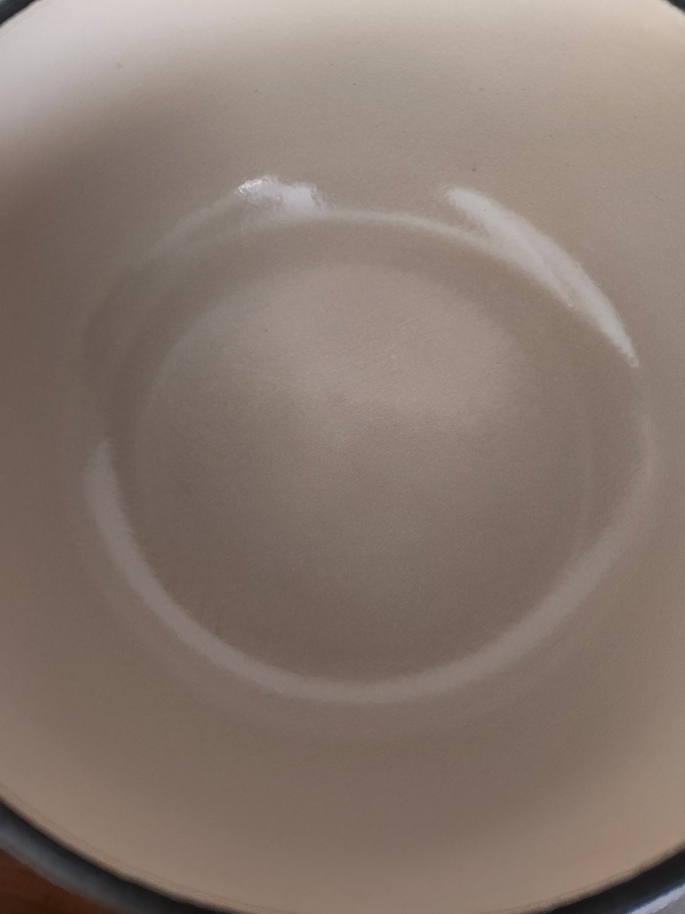
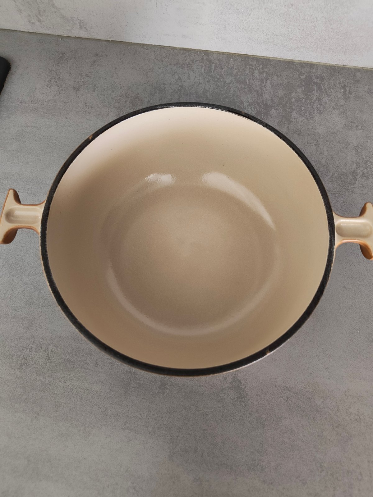
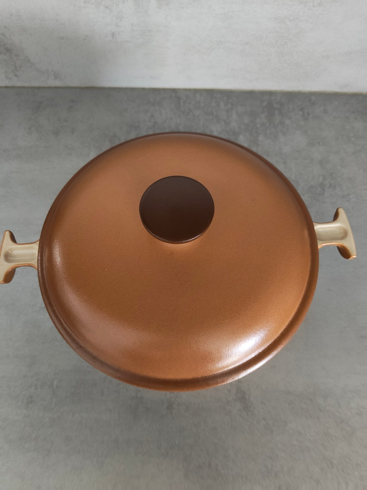
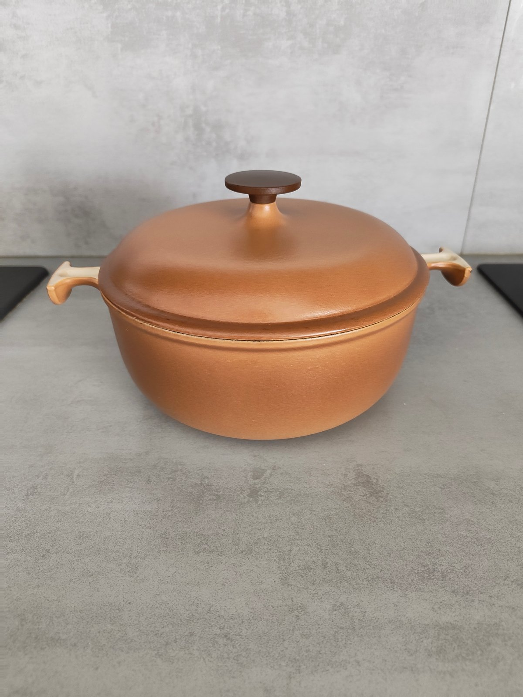
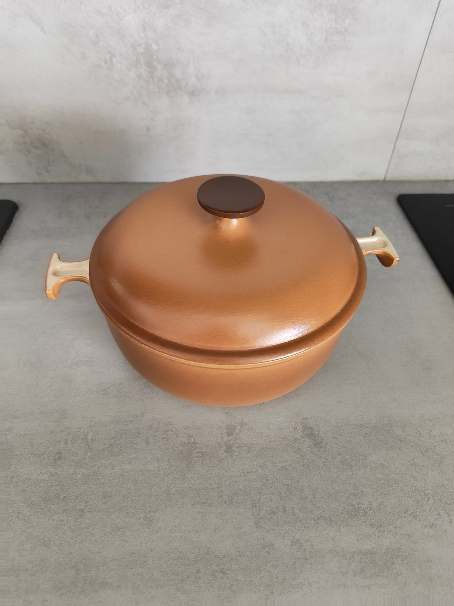
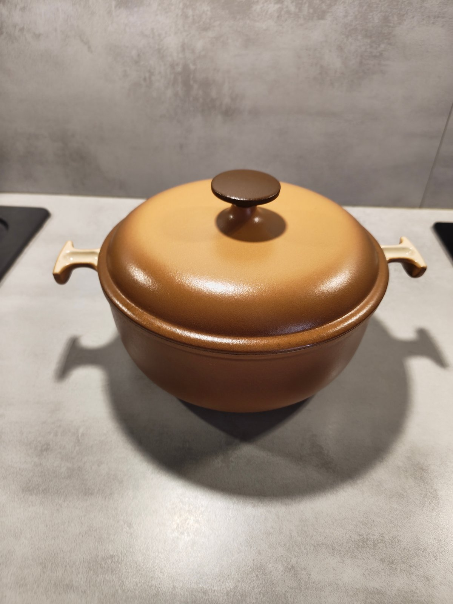
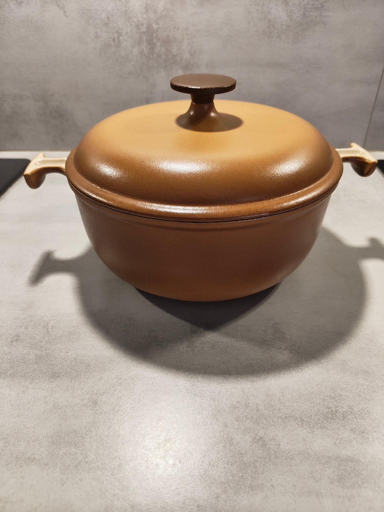

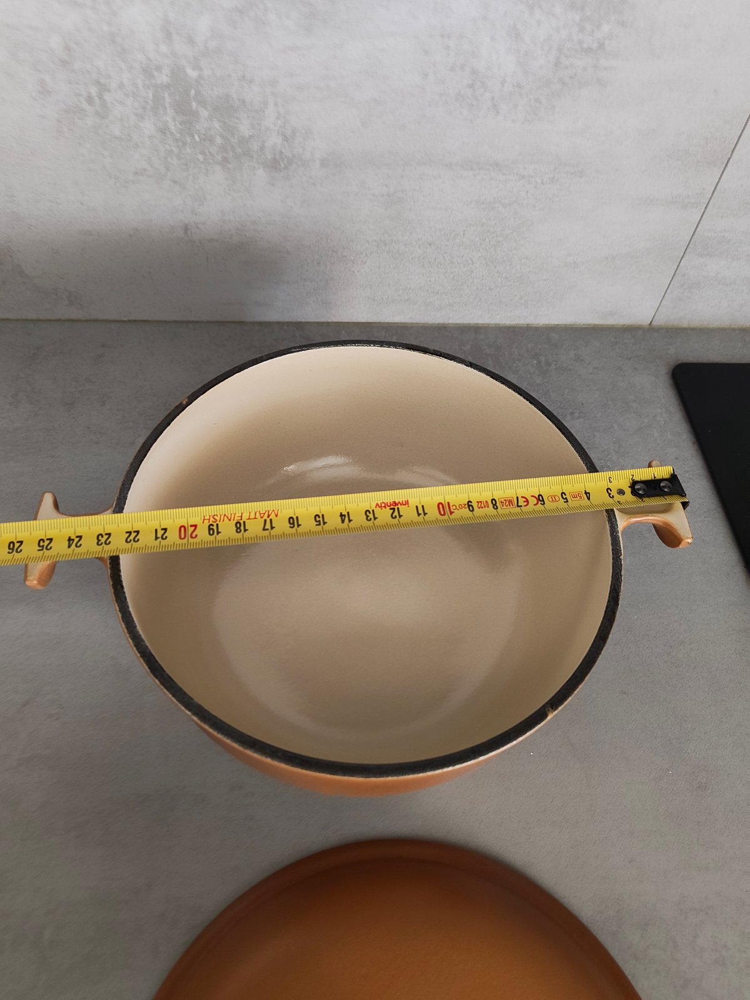
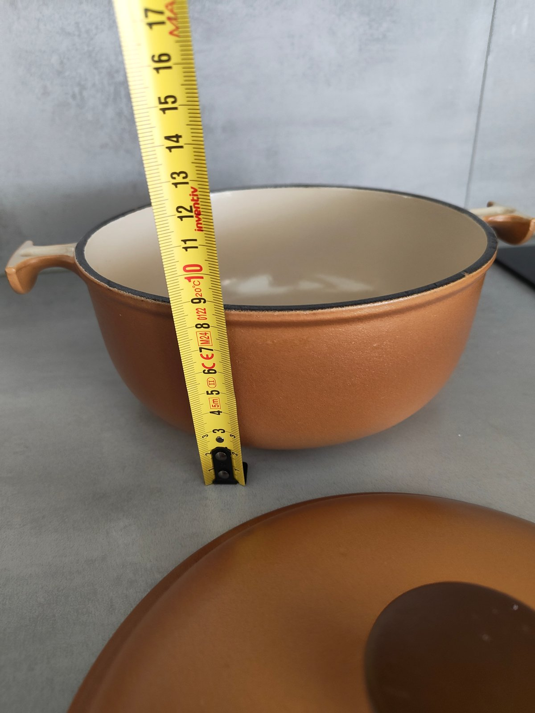
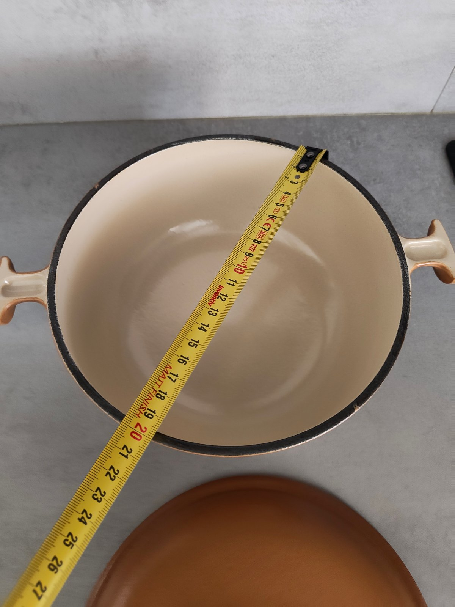
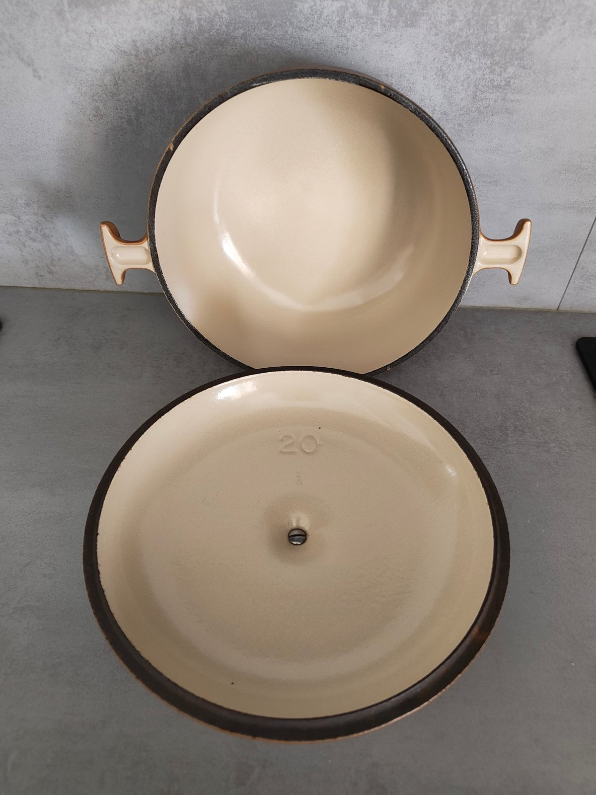
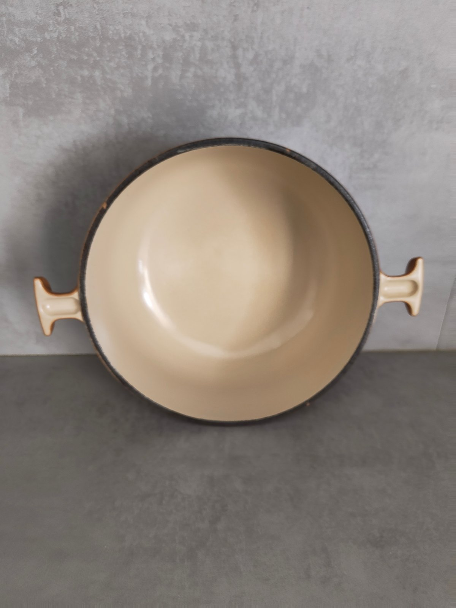
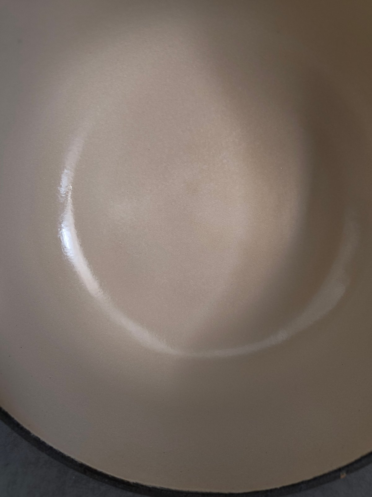
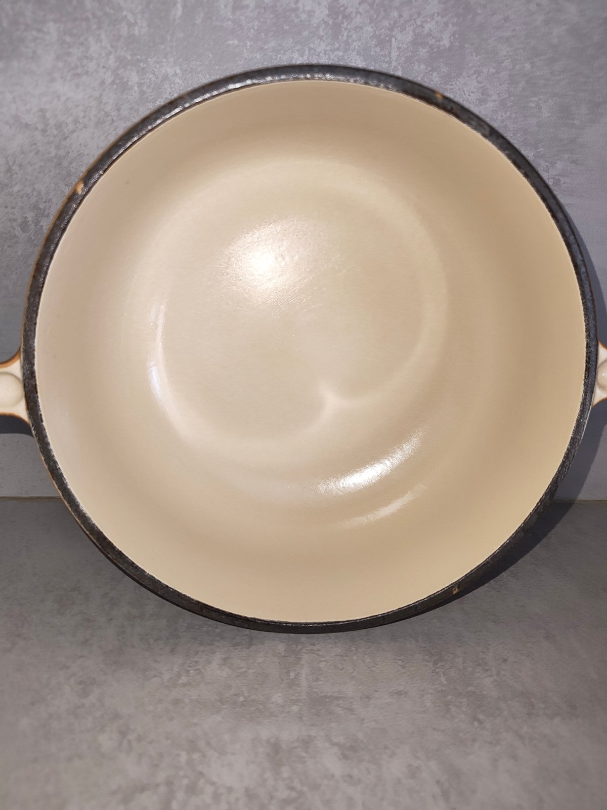
Vintage Le Creuset “La Mama” Cocotte by Enzo Mari – Size 20 – Made in France
105€
No online payment: we reply personally to confirm availability, shipping and payment.
Rare vintage Le Creuset ‘La Mama’ cocotte designed by Enzo Mari, featuring a beautiful matte bronze / copper enamel finish and sculptural minimalist handles characteristic of the iconic 1970s collection. This elegant and sculptural piece features the signature minimalist side handles and rounded lid typical of the La Mama collection. The warm copper / bronze satin enamel exterior paired with the light cream enamel interior gives it a beautiful mid-century modern aesthetic that works both as cookware and decorative display piece. The cocotte is in very good vintage condition with normal traces of age and use visible mainly around the rim edges. The interior enamel remains clean and glossy. A highly collectible design object appreciated by Le Creuset collectors and lovers of vintage Italian design. Perfect for slow cooking, stews, soups, serving dishes, or simply as a rare decorative kitchen piece.
You may also like

Rare Vintage Le Creuset Raymond Loewy Coquelle Nº45 with Matching Plate & Lid
140€

Vintage Enzo Mari Cast Iron Dutch Oven Size 29 – Grey Enamel – Made in France – Designer Cookware
130€

Vintage Le Creuset “La Mama” Dish by Enzo Mari – Size 29 – Made in France
95€

Vintage Le Creuset Enzo Mari Saucepan / Casserole – Rare Design – Made in France
65€